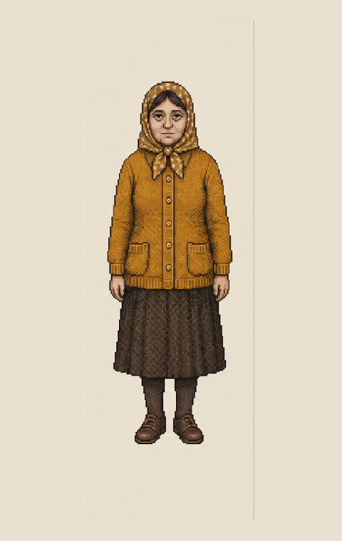
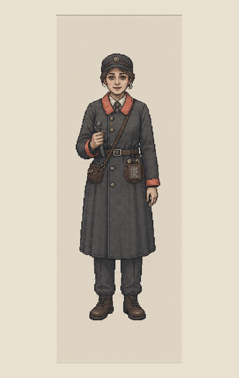

PERSON-MENG / 48
孟秋兰
持续替被注销的儿子保留配给位置。她要的首先不是赔偿，而是一项正式存在记录。
孟秋兰的检测单“早得不可能”。玩家必须判断：是她伪造了一份污染证明，还是这座城市把事故开始的日期写晚了四天。

顾原与罗雨棠分别掌握名单和票根；他们的材料真实，却都不等于正式档案。
持续替被注销的儿子保留配给位置。她要的首先不是赔偿，而是一项正式存在记录。
夜间装配线领班。他保留过事故名单，也可能为了保住其他工人的配给修改过名单。

夜班电车售票员。用废票根记录从未进入官方时刻表的乘客。
第七码头地下转供管线先发生泄漏，污染进入宿舍和夜间装配区域。工厂为了完成当期生产没有立即上报。早期检测、医疗和转运记录因此全部显得“早于事故”，成为最容易被判定为伪造的一批材料。
玩家先决定孟秋兰今天能否获得水，再决定她是否有权查看过去。
孟秋兰家中自来水有异味，她本人出现皮肤灼伤。
身份、住所、水电单、污染检测、医院急件。
检测日期早于官方事故日期四天。
先批准净水，不等于立刻承认事故日期。
孟秋兰申请查看儿子的污染检测、夜班名单与交通记录。
生存状态不明时，直系亲属可以申请有限查看。
只允许已确认死亡人员的亲属申请。
她的儿子既未确认存活，也未确认死亡。
装配厂以避免恐慌、保护调查和维持合作为由申请续封。
签章、单位资格和封存理由均可设置为有效。
申请单位同时是潜在事故责任方。
谁来承担“不确定”继续存在的代价。
票根不能证明身份，名单不能证明死亡，检测不能证明责任；但它们能证明官方时间线并不完整。
“揭露真相”不能成为一个没有后果的完美按钮。
工厂与监察压力下降。孟秋兰仍无法获得儿子的正式状态，私人材料转入夜间网络。
她确认儿子曾在名单中，却拿不到可用于申诉的正式副本。
档案进入公开复核；若缺少林默、宋铎或罗雨棠的旁证，早期检测仍可能被定为伪造。
玩家恢复了部分记录，却没有批准孟秋兰当天的净水与安置，真相不能替代生活。
让每个人都有现实利益，避免把事故线写成单纯阴谋揭露。
不要让孟秋兰只想曝光工厂，她首先想确认儿子存在过。
不要把顾原简单写成坏人，他可能也在保护其他工人的配给。
不要让一张票根直接成为万能法律证据。
不要把拒绝续封写成无成本的完美结局。